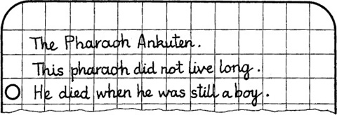

5
Listen to Part 1:

Con mèo đen
Salahadin về nhà rất muộn. Gần nửa đêm và anh ta rất mệt. Nhưng công việc của anh ta vẫn chưa xong. Anh ta lấy vài tờ giấy ra khỏi ví. Đó là những tờ giấy từ phòng của Pearson. Salahadin ngồi xuống và nhìn vào những ghi chú của Pearson.

Salahadin đọc lại những ghi chú. Anh ta tự hỏi mình một số câu hỏi. Pearson có tìm thấy lăng mộ của Ankuten không? anh ta tự hỏi. Anh ta có tìm thấy một con mèo đen không? Và con mèo đen có phải làm bằng vàng?
Có một lý do cho cái chết của Pearson. Mèo đen có phải là lý do không?
Có quá nhiều câu hỏi, Salahadin nghĩ. Tôi phải tìm ra câu trả lời. Câu trả lời nằm trong chiếc hộp đang mất tích và có lẽ nó đang trên đường đến Beirut. Tôi sẽ ở đó vào ngày mai.
Mục lục
- Bìa
- Trang tên
- Trang bản quyền
- Mục lục
- Lời giới thiệu
- 1 Salahadin lo lắng
- 2 Chiếc hộp mất tích
- 3 Người lái xe taxi
- 4 Thuyền đến Beirut
- 5 Con mèo đen
- 6 Ở Beirut
- 7 Đường đến Ba’albek
- 8 Câu chuyện của Borkman
- 9 Beirut đến Athens
- 10 Salahadin tìm thấy Peterson
- 11 Salahadin tìm thấy con mèo đen
- 12 Cái chết trên The Syria
- 13 Không làm phiền
- 14 Trở về Cairo
- 15 Kết thúc
- Các điểm cần hiểu